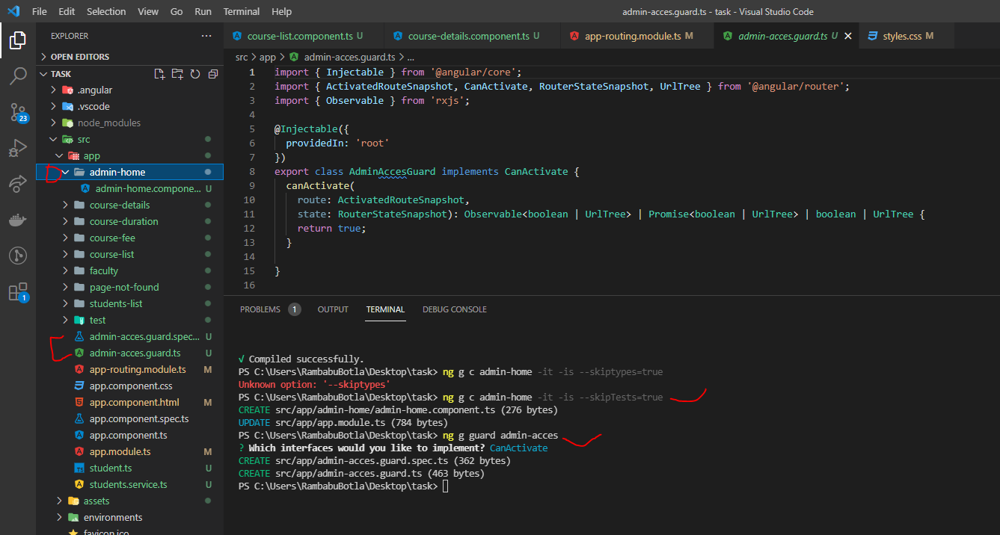
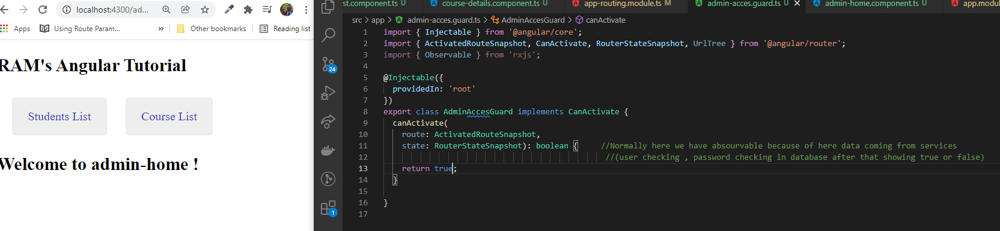
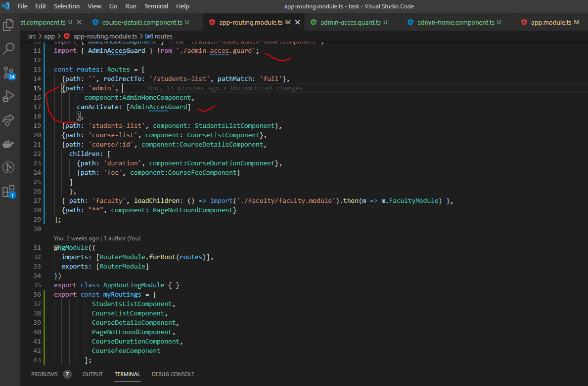
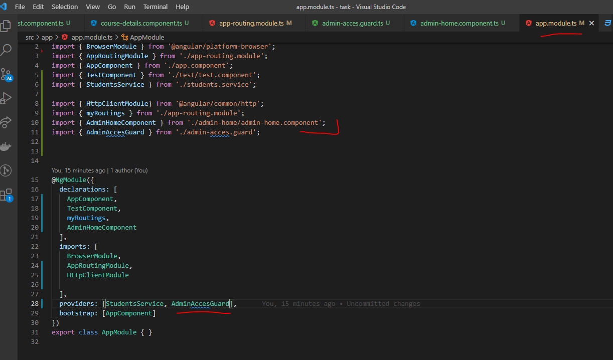

ROUTE GUARDS:
- Route Guards are used to securing the route paths.
- We can generate any number of guards based on our application requirement.
- Whenever we implement a route guard, it will give a Boolean value( True or False).
- Based on this Boolean value, the Angular route decides if the user should access the route or not?
- SYNTAX:
ng g guard guard-name
Inject this guard in our module under providers array.
- Types Of Guards:
-
There are various types of route guards available.
- CanActivate - Checks to see if a user can visit a route.
- CanActivateChild - Checks to see if a user can visit route children.
- CanDeactivate - Checks to see if a user can exit a route.
- Resolve - Performs route data retrieval before route activation.
- CanLoad - Checks to see if a user can route to a module that lazy loaded.
Note:
- Route Guard resolves to TRUE or FALSE based on Custom logic and Functionality.
- I have created the admin-home component and generate the admin-access guard as well.

- STEP 1 :-
- In Route Guard file for time beeing remove the observables and check the boolean values true or false and observe the web page

- STEP 2 :-
- In Route file import and create the path for that component

- STEP 3 :-
- In app.module.ts file import and add the same in Providers array
